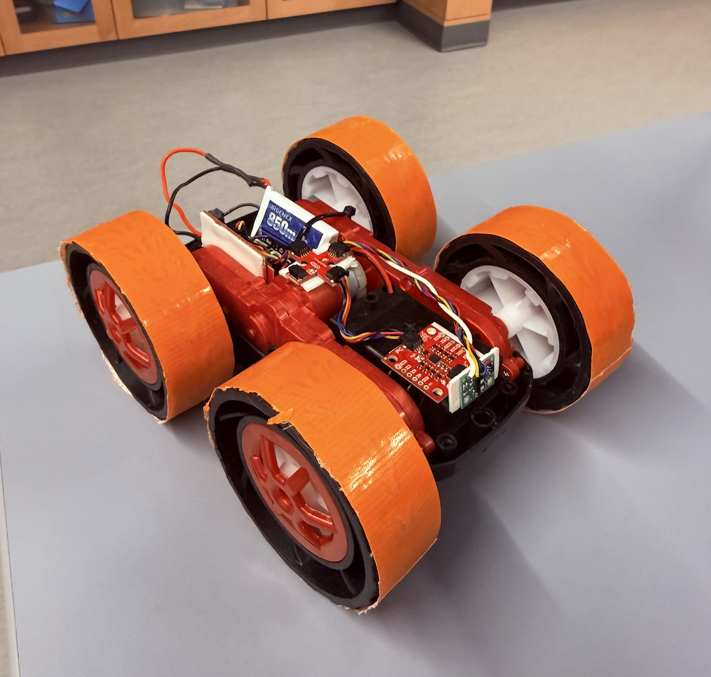
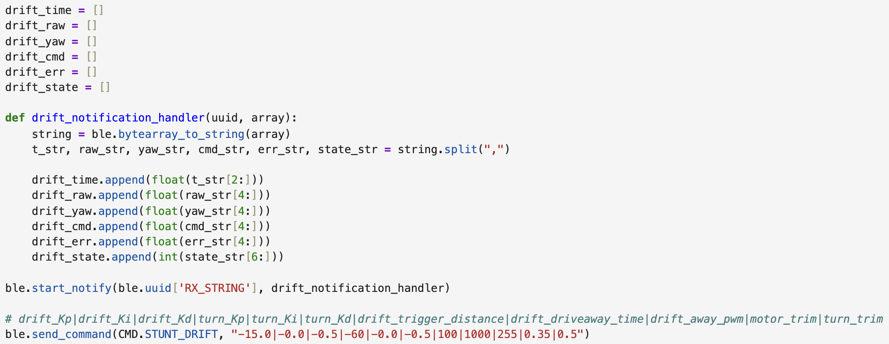
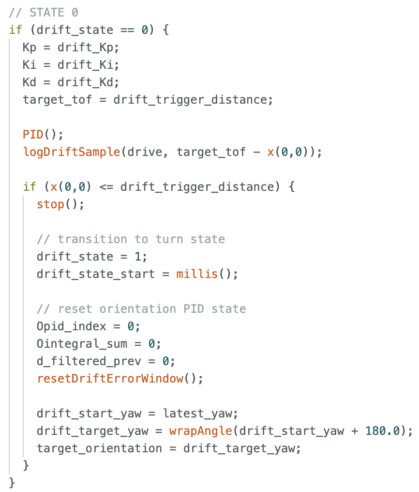
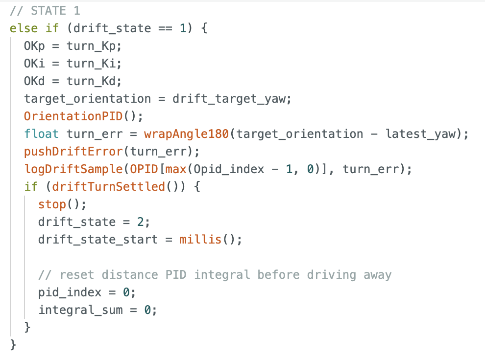
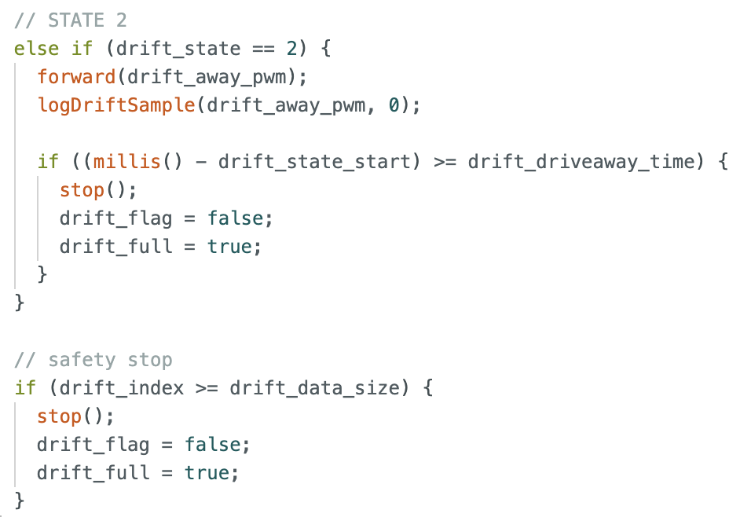
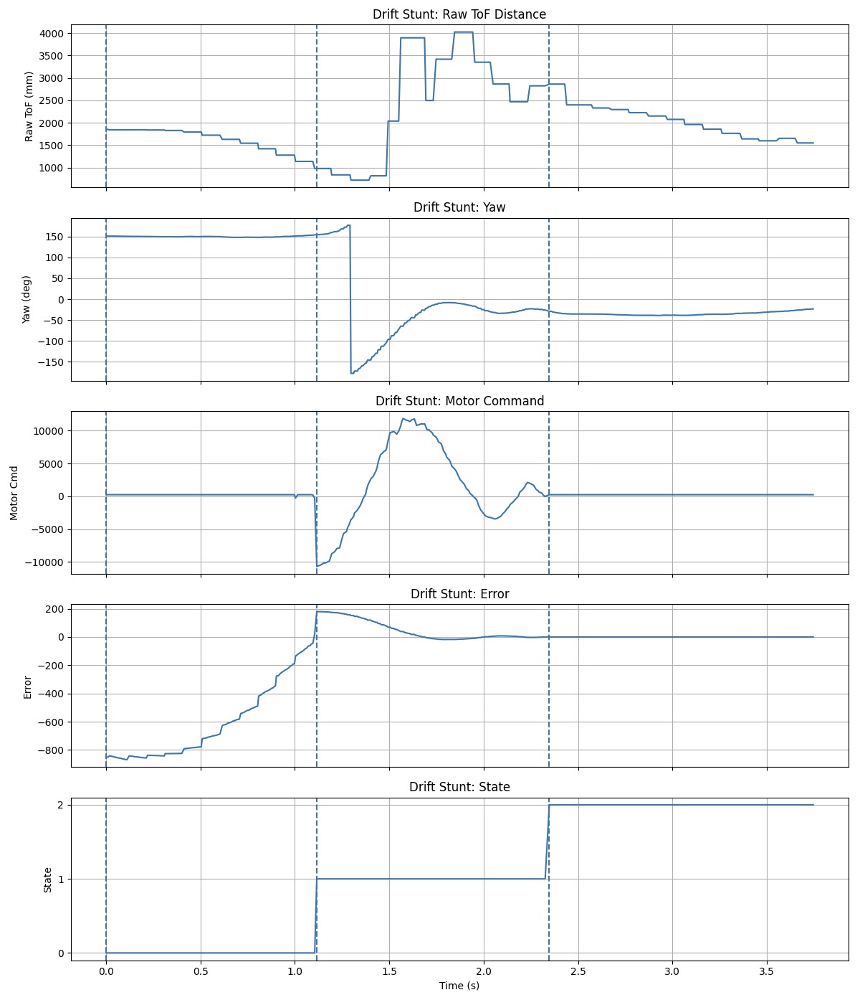
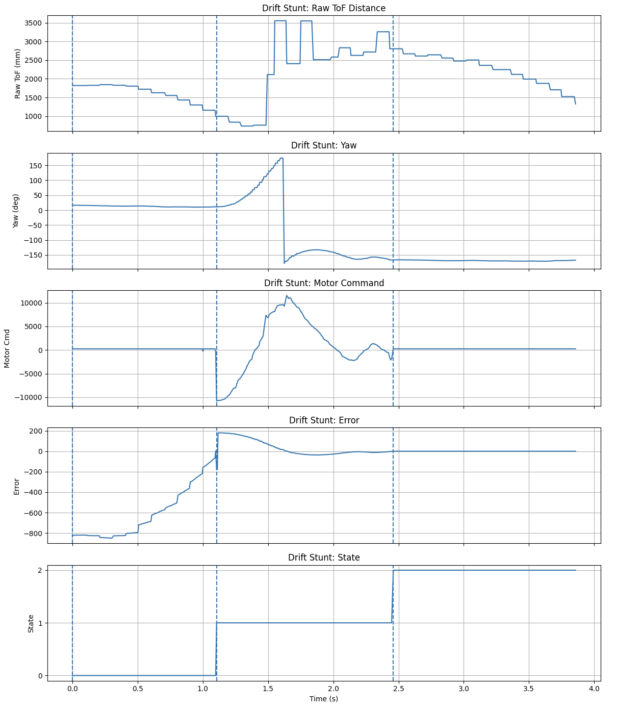
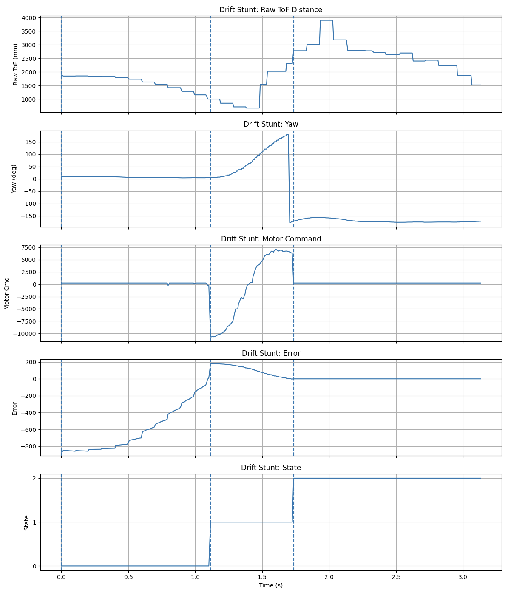

Lab 8: Stunt
ECE4160 Fast Robotics — Spring 2026
Connor Lynaugh
Overview
For Lab 8, I implemented the drift stunt rather than the flip. After testing the car, it became clear that my motors were not capable of reversing strongly enough to make a reliable flip possible, so drifting was the better option. This was a very painful and arduous discovery. It also worked well with the control framework I already had from previous labs, since I could build directly on top of my front ToF sensor, Kalman-filtered wall distance estimate, and IMU-based orientation PID. My final implementation used a dedicated BLE command to initialize the stunt, a three-state controller to perform it, and a logging system to analyze the results afterward.

Bluetooth Command and Drift Initialization
To begin the stunt, I added a new Bluetooth command called STUNT_DRIFT. When this command is received, the code resets the drift state machine, clears the settling window used during the turn, resets the distance and orientation PID state, and parses all of the tunable parameters sent from Python. This gave me a fast way to retune the stunt without reflashing the board after every change.
case STUNT_DRIFT:
{
drift_flag = true;
drift_state = 0;
drift_state_start = millis();
drift_index = 0;
resetDriftErrorWindow();This command also reads in all of the gains and stunt parameters over BLE, including the approach gains, turn gains, trigger distance, drive-away time, and trim values. After that, it initializes the Kalman filter from the current ToF reading and captures the current yaw so that the turn target can be set to 180 degrees from the starting orientation. My python code can be found below.

State Machine for the Drift
I split the stunt into three phases: approach the wall, perform the 180 degree turn, and drive away. This made the controller much easier to debug because I could clearly tell which part of the stunt was failing or taking too long. In the first state, the car drives toward the wall using the front ToF sensor and the estimated distance from the Kalman filter. I reused my distance PID logic so the car could approach aggressively with reasonable control.
The approach state is governed by the filtered distance estimate. The trigger distance was 914 mm, and the controller remained in state 0 until the wall estimate fell below that threshold.
if (x(0,0) <= drift_trigger_distance) {
stop();
drift_state = 1;
drift_state_start = millis();My code then resets the orientation PID state and computes the new yaw target. This transition was important because it prevented old controller history from carrying over into the turn state.

180 Degree Turn Logic
In the turn state, the goal is to rotate the car by 180 degrees as quickly as possible without wasting too much time oscillating around the final heading. In order to do this, I used the yaw from the DMP and defined the target as the current yaw plus 180 degrees, similar to Lab 6. Since yaw wraps around at ±180 degrees, I added angle wrapping logic used previously so the controller always tracks the shortest valid angle.
The target heading for the stunt was generated using the following:
drift_target_yaw = wrapAngle180(drift_start_yaw + 180.0);
target_orientation = drift_target_yaw;The turning phase integrated my orientation PID controller, where the proportional term drove the turn strongly and the derivative term helped reduce overshoot. This was the hardest part of the stunt to tune because the car is intentionally slipping during the drift, so the yaw response is much less predictable than a normal in-place turn.
I did not want the car to move into the final drive-away phase just because it briefly passed near the target heading while oscillating. Instead, I stored recent turn errors in a rolling window and only allowed the transition once the turn had settled.
if (drift_err_hist[i] > drift_each_tol) return false;
return ((sum / DRIFT_ERR_WINDOW) <= drift_avg_tol);This meant every recent error had to stay under a bound, and the average of the recent absolute errors also had to remain under a bound. This made the stunt much more repeatable because the car would not drive away while it was still visibly swinging through the target orientation.

Drive Away and Logging
After settling, the car enters state 2 and drives away for a fixed amount of time. I kept this phase simple and used a fixed PWM instead of another separate closed-loop distance controller. By this point, the main goal was just to finish the stunt quickly and clearly. In my chosen runs, the drive-away time was 1400 ms and the drive-away PWM was 255. Once that timeout expires, the board stops the motors and sends the logged data over BLE like in previous labs.

During the stunt, the board stored time, raw ToF distance, yaw, command effort, control error, and the current state number. The logging function looked like this:
drift_time[drift_index] = millis();
drift_dist_raw[drift_index] = latest_distance;
drift_yaw_log[drift_index] = latest_yaw;
drift_cmd_log[drift_index] = cmd;
drift_err_log[drift_index] = err;
drift_state_log[drift_index] = drift_state;Test Runs
The three runs I chose to compare were the following:
Run 1:
3.94 s using ToF PID (-15.0|0|-1.8), Orientation PID (-15.0|-15.0|-2.0), 914 mm ToF trigger distance, 1400 ms drive back time, 255 drive back pwm, 0.35 motor trim on forward, and 0.4 motor trim on drift.
-15.0|-0.0|-1.8|-15|-15.0|-2.0|914|1400|255|0.35|0.4

Run 2:
4.08 s using ToF PID (-15.0|0|-1.8), Orientation PID (-15.0|-20.0|-2.0), 914 mm ToF trigger distance, 1400 ms drive back time, 255 drive back pwm, 0.35 motor trim on forward, and 0.4 motor trim on drift.
-15.0|-0.0|-1.8|-15|-20.0|-2.0|914|1400|255|0.35|0.4

Run 3:
3.20 s using ToF PID (-15.0|0|-0.5), Orientation PID (-60.0|0.0|-20.0), 914 mm ToF trigger distance, 1400 ms drive back time, 255 drive back pwm, 0.35 motor trim on forward, and 0.85 motor trim on drift.
-15.0|-0.0|-0.5|-60|-0.0|-20.0|914|1400|255|0.35|0.85

The best run was clearly the third one at 3.20 seconds. The largest difference in that case was a much more aggressive turn controller combined with a larger turn trim, which made the car commit much more strongly to the rotation and spend less time oscillating in the turn state.
Discussion
Overall, the biggest challenge in this lab was calibrating the left and right motors, given that my right motor was substantially stronger than my left. At first, it meant I could not move quickly enough to get the momentum required for the flip, and then it meant I could not drift without overshooting on my initial turn. The drift is also very surface dependent, since changes in traction noticeably affect how much the car slips and how cleanly it settles. Even with those challenges, I was happy with the final result. The stunt clearly performs the intended sequence of approaching the wall, drifting 180 degrees, and driving away, and my best run completed in 3.20 seconds.
Acknowledgements
I would like to thank the teaching staff for persistent help and oversight. I would also like to credit ChatGPT for its graphing scripts as well as its conversion of my written lab report into a functional html page.